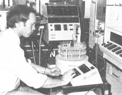
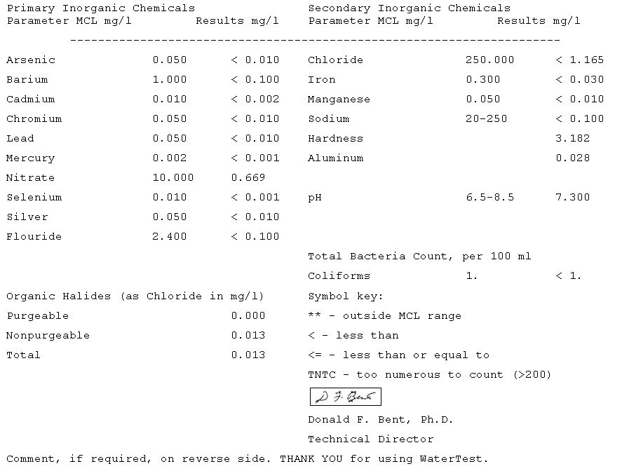

If you suspect your drinking water is contaminated, here's a reasonably priced way to find out.
If you pay any attention to the media, you probably know that the quality of our drinking water is increasingly threatened by the waste products of our society. And of course, MOTHER has been sounding that alarm since her first issue was published almost 14 years ago.
Amazingly enough, however, those public agencies that are charged with the responsibility for protecting our precious water supplies are still largely ineffective at accomplishing that task. Therefore, despite a few well-heralded attempts at restricting pollutant emissions from major chemical dumpers, there is next to no guarantee that your private (or even municipal) water supply is safe to drink.
And compounding that problem, local and regional health departments are capable of performing only the most rudimentary water quality tests for individuals. In MOTHER's own community, for example, the appropriate public agencies check only for bacteria and (in some cases) nitrates. This means that more than 120 of the Environmental Protection Agency's 129 "criteria pollutants" (those for which maximum contaminant levels have been or are to be set under the Safe Drinking Water Act) aren't even searched out.
However, this deplorable situation is not (entirely, anyway) the result of negligence. The fact is that testing for toxic metals, pesticides, organic chemicals, etc. requires sophisticated (and expensive) laboratory equipment and experienced technicians. For example, examining a water sample for traces of all of the 129 priority pollutants has generally cost anywhere from $700 to $1,200 ... a price that puts such a service beyond the finances of most individuals or-on a routine basis-even a government agency.
All of that has changed now, though: A New Hampshire-based laboratory, WaterTest Corporation, has automated the testing process (and combined some of the procedures in an ingenious fashion) to bring the price of a competent, thorough water quality examination down to the incredible figure of $35 per sample!
A LIKELY COMBINATION
WaterTest Corporation got its start about a year and a half ago, when a New Hampshire citizen plagued with offensively smelly and discolored water made a phone call to his state's water quality laboratory. After a number of referrals, Gene Rosov ended up speaking with Dr. Donald Bent (who was director of that agency at the time) about the need for reasonably priced testing services for individuals.
The two quickly realized that their thoughts were running in similar directions, decided to meet for lunch, and eventually combined their expertise (and close to half a million dollars in capital) to open a laboratory. In the following paragraphs we describe how to get a water sample to them for testing, what they do with it when it arrives, and what sort of results you can expect to receive for your money.
YOUR "CHECKUP" IS IN THE MAIL
Once you've sent WaterTest your $35, the lab will supply you with vials, a shipping container, detailed instructions for taking the samples and dealing with the postal system, and a form to fill out (you'll need to note where your water comes from and describe any nearby potential pollution sources).
Because the bacterial count in a water sample could be affected by lengthy shipping periods under adverse conditions, it's extremely important that a sample to be examined for biological problems arrive at WaterTest's New London, New Hampshire laboratory as quickly as possible. After extensive experimentation, the folks there have found that the U.S. Postal Service's Express Mail "A" is consistently quick and reliable. There's a catch, though: Because New London doesn't have an authorized Express Mail zip code, the clerk at your post office will probably try to refuse the order. In such a case, WaterTest recommends that you waive the guarantee on Express Mail "A" (thereby freeing the post office from its promise of 24-hour delivery), which will let you get reasonably fast service while saving about $3.50 over the cost of Express Mail "B". Thus far, all samples shipped by this technique have reached the firm in less than 30 hours ... which is comfortably within the 48-hour maximum time allowable between sampling and testing. Most Express Mail services leave the local post office late in the afternoon, so you'll want to take the samples (in accord with WaterTest's instructions) right before you go to the post office.
LABORATORY AUTOMATION
The odds are quite good that your package will arrive at WaterTest the following day ... and the technician will immediately open it, label the contents, and take one of the plastic bottles to the biological testing room. The water will be filtered to capture any bacteria, and then the "screen" and contents will be cultured (in a petri dish with an appropriate feeding medium) to determine the coliform content. (Coliforms are usually indicative of the presence of fecal matter.)
After the initial examination is completed, backup tests will be run to determine whether any cultures found are actually coliforms. (Other bacteria have a similar appearance but don't pose a health hazard.)
The second sample, also contained in a plastic vial, is then opened and split into several test tubes to be examined for toxic chemicals. An instrument adapted from hospital laboratory work handles 86 samples at once and automatically tallies the levels of chlorides, nitrates, and hardness. Though the last of these is largely an aesthetic concern, the first two can affect health directly, and information about their presence can also help pinpoint the source of bacterial problems. (A report showing nitrates, chlorides, and a high coliform content, for example, is suggestive of septic tank leakage, according to Dr. Bent.)
The second "batch" from that sample is then put through a flame atomic absorption spectrometer ... which, once again, runs automatically and is set up to store the data in computer memory. The device reveals the presence of cadmium, chromium, iron, manganese, and silver according to the wavelengths of light that are absorbed by a flame doctored with minute quantities of your water. Heavier elements (including aluminum, arsenic, lead, and selenium) are searched out with a graphite furnace version of the absorption spectrometer.
The lab is in the process of developing yet another instrument, the inductively coupled plasma atomic fluorescence spectrometer. With this device, a sample can be tested for 12 different toxic metals at the same time (the liquid is injected into a plasma of very hot argon, and technicians then examine the ways in which light wavelengths are altered). To date, the instrument has been used only to detect mercury, but refinement of the machine's performance under the care of Dr. Bent's son Doug, along with Sally Wright--is seen as a key to the company's being able to handle a work load that the group hopes may approach 1,000 samples per week within a year.
Among the toxic substances that have caused the most public concern over the last couple of years are the synthetic organic chemicals, such as pesticides, herbicides, and solvents from the petrochemical industry. Many of these are so elusive that commercial laboratories may charge more than $100 per compound to search them out. Dr. Bent recognized, while WaterTest was still in the planning stage, that it would be impossible to look for dozens of these substances, on an individual basis, and keep the cost within reason. Consequently, the firm has opted for what might be called a "broad brush" technique, wherein the liquid is checked for total organic halides. It makes sense to begin by looking for the total quantity of such substances ... then-if it's alarmingly high-more specific testing can be done, or a treatment system can be installed. Dr. Bent's approach is increasingly favored by analytical chemists, not only because it is much less expensive, but also because it detects compounds that may have been produced by reactions of pollutants with other substances (chlorine-containing compounds are notorious for reacting with other substances to form new toxic chemicals ... thus, a search for a particular pollutant, rather than for evidence of a group, could turn up negative because that chemical has reacted to form a different-but still dangerous-chemical).
A total organic halide instrument examines the third water sample (contained in a glass jar with a foil-lined lid) for both the volatile halides (trichloroethylene and carbon tetrachloride are a couple of examples) and the more complex "nonpurgeables" (such as DDT and PCB's). Many of the well-water samples so far examined by WaterTest contain as much as 100 ppb (parts per billion) of such compounds, and it's not uncommon to find that municipal supplies treated with chlorine for disinfection show contents of more than 300 ppb. (Residual chlorine often combines with organic matter in water to form trihalomethanes, many of which are known to be carcinogenic.) When a water source shows contamination at thousands of parts per billion, it's unquestionably a threat to human health ... but reports in the 100 to 300 range fall in a very gray area. Obviously, some level of organic halide content is preferable to the spread of disease that might occur without chlorine disinfection, yet methods (though they're expensive) are available to municipalities for reducing the trihalomethane content of chlorinated water.
WATER ANALYSIS REPORT
WATER QUALITY CLASSSIFICATION (to the best of present knowlefge): A 1
Safety Classification: A : Safe for human consumption.
Aesthetic Classification: 1 : Excellent aesthetic quality.
This the general classification of hte water sample submitting to our laboratory and is based on the parameters for which it was analyzed. Our manual, titled "The Water You Drink", should be consulted for explaination of hte significance of your water quality classification and the analytical result for each parameter. Please feel free to call us if you have further questions.
All results which are outside the "Maximum Contaminant Levels" (MCL) established under the "Safe Drinking Water Act" are marked with asterisks (**). See "The Water You Drink" for explainations and suggested water problem solutions.
WaterTest's excellent pamphlet, "WaterTest User's Manual: The Water You Drink", discusses the health problems that have been related to all of the compounds that they test for and explains, in detail, the significance of the numbers on the data sheet (which you'll receive in the mail about ten days after shipping your sample). We've reproduced here a copy of that form, from a test on the well of one of our own staff members. Treatment techniques are also covered in the booklet, and the company has a toll-free number that you can use to seek advice on whether (and, if so, how) to deal with a drinking water problem. Though the staff won't recommend a particular product (nor will they sell you anything themselves), they will suggest what kinds of systems will be effective in removing the specific contaminants found in your drinking supply.
The service that this company offers is remarkable in itself, since most people would have a hard time even finding a laboratory that could do comparable work ... at any cost. But the price that WaterTest Corporation asks is nothing short of extraordinary. And in the company's as yet somewhat cramped surroundings, you'll find a group of people dedicated to a rational exploration of the influences that water pollution can have on health. Gene Rosov, for instance, suggests that poor water quality could be responsible for a host of illnesses ... perhaps accounting for billions of dollars in medical expenditures each year (and possibly resulting in the deaths of thousands of people).
The people at WaterTest hope that, as their economic fortunes improve (profitability is still "just around the corner" after a year of operation), they'll be able to use the massive amount of water quality data that they're acquiring to spot regional patterns of health effects. They've already provided a large information base concerning arsenic contamination in the southern part of their own state, and Dr. Bent is particularly interested in trying to correlate the quantity of aluminum in water samples to the occurrence of Alzheimer's disease (a degenerative nerve disorder that hasn't been adequately explained to date).
At any rate, today you have a resource that can help you to determine whether or not your drinking water is really fit to drink ... and tomorrow, with the help of WaterTest Corporation, we all may get a better idea of how water quality is affecting the health of our nation as a whole!
EDITOR'S NOTE: You can arrange to have a sample of your drinking water examined by sending $35 (check, money order, or charge card) to WaterTest Corporation, Dept. TMEN, Box 186, New London, New Hampshire 03257.
|
 Here's Daug at the flame atomic absorption spectrometer. |
 |
|